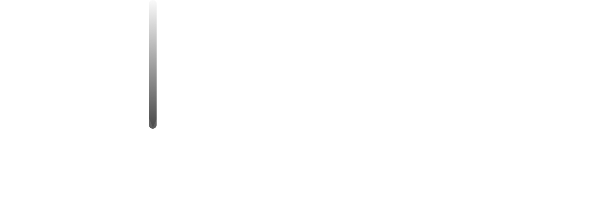
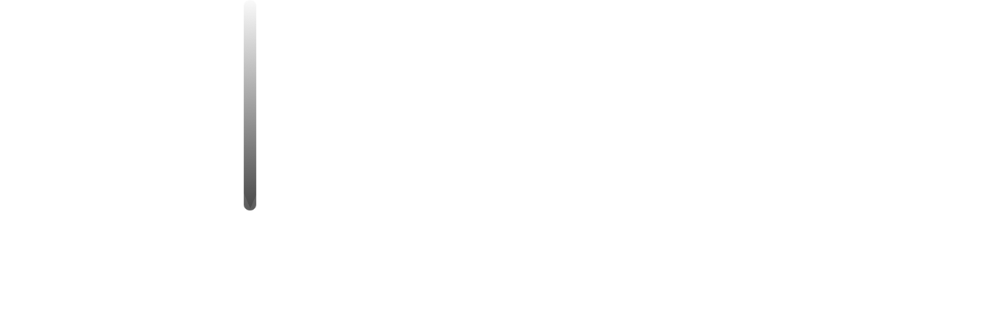

Welcome to the evolution.
You are going to see a genetic evolution simulation where the ‘things’ fight for food and try to stay away from poison.
You are going to see a genetic evolution simulation where the ‘things’ fight for food and try to stay away from poison.
This is a simulation of genetic evolution. Green dots are food and red dots are poison. The redder they are, the faster they are. Being fast means they have to spend a shitload of energy which kills them. As dying is not fun they have to strike a balance.
Also, by clicking on properties you can see their food sensing and poison sensing radius. The bigger they are the more energy they spend.